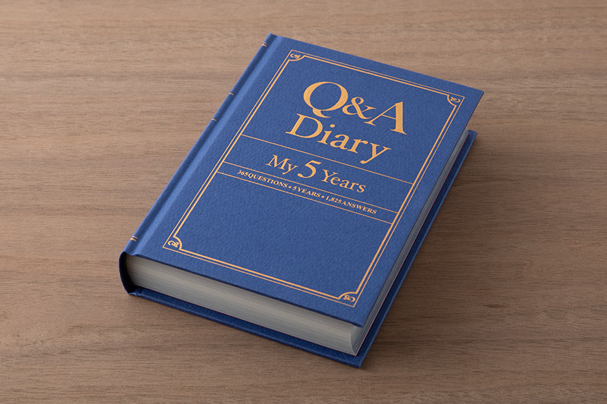

質問がやさしく導く
その日の気分や出来事を書きやすい質問を掲載。 何を書けばいいか迷いません。
送料無料キャンペーン実施中 / はじめての日記にもおすすめ
QUESTION / ANSWER / DAILY MEMORY
Q＆A diary は、毎ページの質問に答えながら書き進める日記です。 真っ白なページに悩まず、毎日の気持ちや出来事をやさしく残せます。
Q. 今日いちばんほっとしたことは？
A. 帰ってすぐ、お茶を飲んだ時間。3分で書けるのがちょうどいい。

この画像を表示するには、添付写真を `assets/qa-diary.jpg` に保存してください。
FEATURES
その日の気分や出来事を書きやすい質問を掲載。 何を書けばいいか迷いません。
長文でなくても大丈夫。 一言だけでも、その日の気持ちがきちんとページに残ります。
毎日の答えが積み重なって、未来の自分への小さな手紙のようになります。
HOW TO USE
その日のページを開いて、最初の質問を読んでみます。
正解はありません。短い言葉でも、気軽な一文でも大丈夫です。
書いた記録が積み重なるほど、自分だけの思い出帳になっていきます。
REVIEW
「寝る前に3分だけ書いています。 今日は何を書こうって考えなくていいので、 思ったより気楽に続いています。」
20代 / ひとり暮らし「紙の色や表紙の感じが文具っぽくて好きです。 机に出しっぱなしでもかわいいので、 ちゃんと手に取る回数が増えました。」
30代 / 文具好き「毎日しっかり書けるわけじゃないけど、 一言だけの日があっても気にならないのがよかったです。 休みの日に読み返すのがちょっと楽しみになっています。」
10代 / 学生SPEC
FAQ
はい。毎回「何を書こう」と考えなくていいので、 日記が苦手な人でも始めやすいです。 短い日があっても気にせず続けられます。
はい。やわらかいデザインで使う人を選びにくいので、 誕生日や新生活のちょっとした贈りものにもおすすめです。
いいえ。数行だけの日があっても大丈夫ですし、 書けない日があっても問題ありません。 自分のペースで気楽に続けてください。
早い日は2〜3分ほどでも書けます。 しっかり書きたい日は少し長めに、 その日の気分にあわせて使えます。
はい。質問の内容は日常の気持ちや出来事に寄っているので、 年齢を問わず使いやすい内容です。 はじめて日記を書く人にも向いています。
さらっと書きやすく、ふだん使いしやすい紙を想定しています。 ボールペンやゲルインクで書きやすい、やわらかな紙ものの雰囲気です。
ギフト設定を選ぶと、やさしい雰囲気のラッピングでお届けする想定です。 自分用はもちろん、そのまま贈りものとして渡しやすい仕上がりです。
通常はご注文後1〜2営業日以内に発送予定です。 お急ぎのときは、購入前に発送目安を確認していただくのがおすすめです。
READY TO ORDER